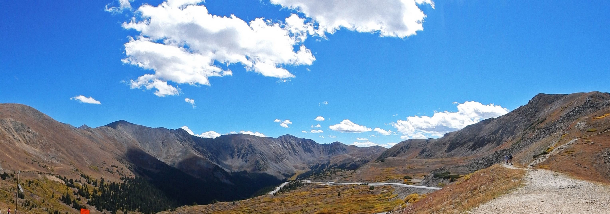

Hobbies
Other Publications
In my free time I like to write outside of the realm of peer-review. I write career materials, short stories and science fiction novels. They are self-published on Amazon.
Alternative Careers in Science: A 2018 Starter’s Guide to Success
Available for purchase and download here.
Designed for people who want to get off of the tenure track, but don’t know how to get started. This guide was written by a neuroscientist who left research and found success in the field of Data Science & Analytics.
Mettle: an illustrated miniseries
Available for purchase and download here.

These stories are quick to read and leave a lot to the imagination. But beware, they are not for the faint of heart…
Humans ended up in a complicated love affair with their technology, so much so that they gave them something sacred. Each Genesis unit was given a living, beating, bleeding human heart. The only possible eventuality was total war.
The Great Sorrow ended in a catastrophic loss of human life and tore open a gaping rift between man and machine. The Genesis units seek forgiveness because they think in it they will find their salvation - but humans have little to give in the aftermath of near extinction.
Both humans and androids are left lost amongst each other, seeking to find themselves in a new natural order. They each have their wounds and they each have their story - but the androids have only one collective soul. Can they come to terms with their past, and design a future worth living for all?
Alien Tombs Series
Available for purchase and download here.

The great Pharaoh Rameses II rules over Egypt with a golden hand. The people prosper and there is peace along the Nile - or at least, that is how it appears.
Powerful cults conspire against Rameses in the north and an ancient grudge fuels the flame. Nebi and his family get swept into a devious plot to kill the Pharaoh. His father, a Mason, is accused of a terrible crime and Nebi is forced to run for his freedom. He stumbles onto an ancient object that changes everything. He follows its’ call to the Valley of the Kings and learns a shocking history of his people.
Dangerously Human
Available for purchase and download here.
Space is a very deadly place, a vacuum filled with colossal distances, impenetrable darkness and blazing balls of fire. Humans have spread so far throughout the four quadrants that they have lost touch with their origins.
Matter generators have given humanity the gift of creation but they have failed to realize its’ true power. People use the technology without understanding where it came from, or how it works.
Clandestine entities from the boundless zone smuggle the required materials into the quadrants through a small but elite group of liaisons. A contract lasting generations keeps the arrangement intact. A handful of people know where to meet these aliens to acquire the mysterious substance but no one knows where they get it or why they require payment in human slaves…
Brazilian Jiu Jitsu
When I am not working or writing, you can find me training at my local gym. I have been training and competing in Brazilian Jiu Jitsu since 2015.
Blue Belt!
I was awarded my blue belt!

After some well-intentioned hazing…

Nature Photography
It’s sometimes hard to fit everything in, but I also like to take nature pictures.
Here is a panorama that I took in the Rocky Mountains at 14,000 feet!

Here are some I took at Yellowstone National Park.